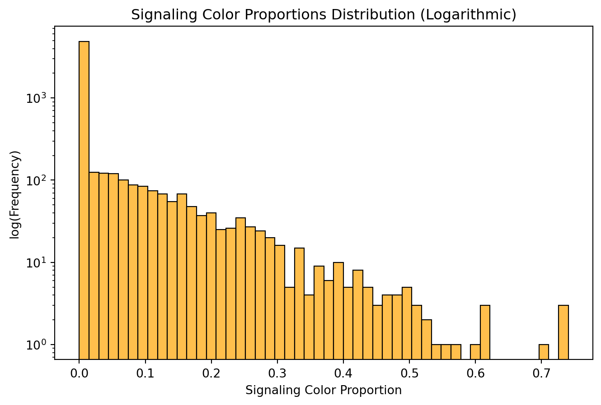

This dataset contains tables as CSV files describing video game data such as category, descriptions, game details, genres, promotional materials, reviews, tags, and other metadata for 140,082 games. These were sourced from the official Steamworks Web APIs in Octobor 2024.
Additionally, some data concerning predicted ownership, number of concurrent users, and more were sourced from the SteamSpy API.
The data was reportedly collected for EDA and to explore patterns and opportunities in the game development space.
Discussion
This data has a rich variety of data; promotional images, some textual metadata and reviews, release dates, prices, and more. However, there are some significant limitations as well. The numbers from the SteamSpy API in particular are predictive and some of the most interesting metrics (like number of owners and concurrent users) are imprecise. Also, this dataset being a snapshot from October 2024 limits the ability to answer many questions related to changes over time.
Summary
The dataset is comprised of the following CSV files. Games are joined on universal “app_id” identifiers.
categories.csv: Misc. textual description tags (ex. multiplayer, family sharing)
descriptions.csv: Textual game descriptions from Steam pages.
games.csv: Metadata about the game such as title, release date and price.
genres.csv: One or more genres per game.
promotional.csv: Links to promotional material like screenshots and videos.
reviews.csv: Aggregations of user and critical review metrics. Textual critic reviews are included for some games.
steamspy_insights.csv: Various metrics sourcedd from the SteamSpy API.
tags.csv: Textual tags describing games. More specific than genre but less technical than categories.
Limitations
Several steps were taken to further collect, clean, and wrangle the data outside of this notebook.
Some genres were listed in different languages and had to be translated. This was limited enough to be reasonably done with a mapping data structure.
Additionally, some prices had to be converted to one currency. The majority of games were listed in Euros and many more were in USD, GBP, or RUB; the latter were converted to the former and others were dropped during modeling with prices due to the risks posed by errors propogated by inaccurate exchange rates along with the relative infrequency and obscurity of games listed with different currencies. However, it should be noted that this choice may introduce bias related to such games.
Some image feature extraction and text embedding work is done with game header images and game titles/descriptions. To limit the downloading and processing of over 100,000 games, only those predicted to have 10 or more concurrent users were processed in this manner. This leaves 6,174 games and limits the image and text embedding exploration to observing patterns in only more recently relevant games!
Finally, another limitation to note is the lack of review score data for games without sufficient reviews; only those with 10 or more may be included in the predictions near the end.
Questions
How do user and critic reviews relate to ownership?
Have prices shifted over the years?
Header Images
What patterns may be observed promotional images?
How do image features relate to other features (ex. tags, genres)?
Tags
What tags co-occur?
How do tags relate to metrics of success like concurrent users and reviews?
Success Metrics
What factors seem to have a relationship with the number of concurrent users?
C:\Users\eric\Documents\A_OREGON\25_winter\cs670_datascience\project\cs670_project\venv\Lib\site-packages\tqdm\auto.py:21: TqdmWarning: IProgress not found. Please update jupyter and ipywidgets. See https://ipywidgets.readthedocs.io/en/stable/user_install.html
from .autonotebook import tqdm as notebook_tqdm
Several features will be extracted for various explorations in the following sections. These include dominant colors via K-Means quantization, color histograms, proportions of signalling colors (ex. red, orange, yellow), and structural features with PCA.
Load Images
Show code
class FeatureData:def__init__(self, keys):self.data = {}self.map= {key: i for i, key inenumerate(keys)}def add_column(self, column_name, values):self.data[column_name] = valuesdef get_column(self, column_name):if column_name notinself.data:raiseKeyError(f"Column '{column_name}' not found.")returnself.data[column_name]def__getitem__(self, column_name):returnself.get_column(column_name)def get(self, col, id): key =self.map[id]returnself.get_column(col)[self.map[id]]def__repr__(self):returnf"{self.__class__.__name__}({self.data})"
Show code
def load_image(image_path): image = cv2.imread(image_path) # Loads image in BGR format image = cv2.cvtColor(image, cv2.COLOR_BGR2RGB) # Convert to RGBreturn imageimage_dir ="../data/img/header"images = FeatureData(top_ids.app_id)img = []for app_id, idx in images.map.items(): img.append(load_image(f"{image_dir}/{app_id}.jpg"))images.add_column("img", img)
def find_top_colors(image_array, k):"""Find k dominant colors using MiniBatchKMeans for speed.""" kmeans = MiniBatchKMeans(n_clusters=k, n_init=3, batch_size=1000) kmeans.fit(image_array)return kmeans.cluster_centers_def replace_colors(image_array, top_colors):"""Replace each pixel with the closest top color using cKDTree.""" tree = cKDTree(top_colors) _, indices = tree.query(image_array) # Find closest colorsreturn top_colors[indices]def rgb_to_lab(image_array):"""Convert RGB image to LAB color space for better clustering."""return cv2.cvtColor(image_array.astype(np.uint8), cv2.COLOR_RGB2LAB).reshape(-1, 3)def process_image(img, k):"""Pipeline for a single image.""" flat_lab = rgb_to_lab(img) top_colors = find_top_colors(flat_lab, k)return top_colors
Show code
# Process images in parallelk =8knn_colors = Parallel(n_jobs=-1, backend="loky")( delayed(process_image)(img, k) for img in images["img"])images.add_column("knn", np.array(knn_colors))
EIG_SIZE = (128, 128)EIG_COMPONENTS =20# Convert images to grayscale and flatteneig = []for img in images["img"]: gray = cv2.cvtColor(img, cv2.COLOR_BGR2GRAY) # Convert to grayscale resized = cv2.resize(gray, EIG_SIZE) # Resize to fixed size flattened = resized.flatten() # Flatten into 1D vector eig.append(flattened)# Stack all images into a matrix (each row is an image)image_matrix = np.stack(eig)# Apply PCApca = PCA(n_components=EIG_COMPONENTS)pca.fit(image_matrix)# Visualize the top principal componentsfig, axes = plt.subplots(EIG_COMPONENTS //5, 5, figsize=(10, 8))for i, ax inenumerate(axes.flat):if i >= EIG_COMPONENTS:break eigenimage = pca.components_[i].reshape(EIG_SIZE) # Reshape back to image ax.imshow(eigenimage, cmap='gray') ax.set_title(f'PC {i+1}') ax.axis('off')plt.tight_layout()plt.show()# Project images onto principal componentspca_features = pca.transform(image_matrix)images.add_column("pca", pca_features)
Signalling Colors
Show code
def extract_signaling_color_proportion(color_histograms):"""Extract proportion of signaling colors (bright red, yellow, orange) from histograms.""" signaling_proportions = []for hist in color_histograms: red_hist, green_hist, blue_hist = hist # Each image's RGB histograms# Define bright red & yellow regions in RGB histograms (sums are # of pixels in that range for that histogram) bright_red = np.sum(red_hist[200:256]) - np.sum(green_hist[200:256]) - np.sum(blue_hist[200:256]) bright_yellow = np.sum(red_hist[200:256]) + np.sum(green_hist[200:256]) - np.sum(blue_hist[200:256]) bright_orange = np.sum(red_hist[180:220]) + np.sum(green_hist[100:180]) - np.sum(blue_hist[0:100])# Normalize by total pixels to get proportion total_pixels = np.sum(red_hist) + np.sum(green_hist) + np.sum(blue_hist) signaling_score = (bright_red + bright_yellow + bright_orange) / total_pixels signaling_proportions.append(max(0, signaling_score)) # Ensure non-negative valuesreturn np.array(signaling_proportions)# Extract signaling color proportionssignaling_scores = extract_signaling_color_proportion(color_histograms)images.add_column("signal", signaling_scores)
Show code
def highlight_signaling_colors(image): hsv = cv2.cvtColor(image, cv2.COLOR_RGB2HSV)# Define color ranges red_lower1, red_upper1 = np.array([0, 120, 120]), np.array([10, 255, 255]) # Red (low end) red_lower2, red_upper2 = np.array([170, 120, 120]), np.array([180, 255, 255]) # Red (high end) yellow_lower, yellow_upper = np.array([20, 100, 100]), np.array([35, 255, 255]) # Yellow orange_lower, orange_upper = np.array([10, 150, 100]), np.array([20, 255, 255]) # Orange# Create masks for each color mask_red = cv2.inRange(hsv, red_lower1, red_upper1) | cv2.inRange(hsv, red_lower2, red_upper2) mask_yellow = cv2.inRange(hsv, yellow_lower, yellow_upper) mask_orange = cv2.inRange(hsv, orange_lower, orange_upper)# Combine masks mask = mask_red | mask_yellow | mask_orange# Convert mask to 3-channel (Red overlay) mask_colored = np.zeros_like(image) # Start with a black image mask_colored[:, :, 0] = mask # Assign mask to Red channel (0: Red, 1: Green, 2: Blue)# Overlay mask on the original image overlayed = cv2.addWeighted(image, 0.7, mask_colored, 0.5, 0)return overlayedimage = images["img"][2]fig, axes = plt.subplots(1, 2, figsize=(10, 5))# Apply the overlay functionhighlighted_image = highlight_signaling_colors(image)# Show the resultaxes[0].imshow(image)axes[1].imshow(highlighted_image)plt.axis("off")plt.title("Signaling Colors Highlighted")plt.show()
Show code
plt.figure(figsize=(8, 5))sns.histplot(signaling_scores, bins=50, edgecolor="black", alpha=0.7, color="orange")plt.xlabel("Signaling Color Proportion")plt.ylabel("log(Frequency)")plt.title("Signaling Color Proportions Distribution (Logarithmic)")plt.yscale("log")

The distribution of signaling color proportion is notable for its skew; most images are not dominated by red, orange, and yellow. It could be that the presence of signaling colors is more important than proportion though; a binary feature variable will be created for use in modeling based on thresholding.
# Map histogram features to RGB labelsdef interpret_hist_feature(hist_index): channel = hist_index //256# 0,1,2 -> RGB bin_index = hist_index %256 channels = ["red", "green", "blue"]returnf"{channels[channel]}_{bin_index}"hist_flat = images["hist"].reshape(6174, -1) # Shape becomes (6174, 768)hist_df = pd.DataFrame( hist_flat, index=list(images.map.keys()), columns=[f"hist_{i}"for i inrange(hist_flat.shape[1])])# Convert PCA features to dataframepca_df = pd.DataFrame( images["pca"], index=list(images.map.keys()), columns=[f"pca_{i}"for i inrange(images["pca"].shape[1])])# Rename histogram feature columnshist_feature_names = [interpret_hist_feature(i) for i inrange(768)]hist_df.columns = hist_feature_names# Get projected histogramspca_color = PCA(n_components=0.95)hist_pca_df = pd.DataFrame(pca_color.fit_transform(hist_df), index=hist_df.index)hist_pca_df.columns = [f"hist{i}"for i in hist_pca_df.columns]# Concatenate color histogram, PCA features, and signaling color featuresvisual_features_df = pd.concat([hist_pca_df, pca_df, signal_df], axis=1)# Normalize visual features# scaler = StandardScaler()# visual_features_scaled = scaler.fit_transform(visual_features_df)# visual_features_df = pd.DataFrame(visual_features_scaled, index=visual_features_df.index, columns=visual_features_df.columns)
Tags
Tags provide finer-grained descriptions of games than genre. Here, they will be encoded for modeling later and explored for aspects such as co-occurrence and relationships to image features.
Encoding
Show code
# Group tags by app_idgrouped_df = tags.groupby("app_id")["tag"].apply(list).reset_index()# Apply MultiLabelBinarizermlb = MultiLabelBinarizer()tag_matrix = mlb.fit_transform(grouped_df["tag"])# Convert to DataFrametag_df = pd.DataFrame(tag_matrix, columns=mlb.classes_, index=grouped_df["app_id"])
Top Tag Co-Occurence
Show code
top_n =25tag_counts = tags["tag"].value_counts()top_tags = tag_counts.nlargest(top_n).index# Filter dataset to include only top tagsfiltered_df = tags[tags["tag"].isin(top_tags)]# Compute matrixco_mat = pd.crosstab(filtered_df["app_id"], filtered_df["tag"])co_mat = co_mat.T.dot(co_mat)# Normalizeco_mat = co_mat / co_mat.max().max()# Zero out diagonalnp.fill_diagonal(co_mat.values, 0.0)plt.figure(figsize=(10, 8))sns.heatmap(co_mat, cmap="coolwarm", annot=False, xticklabels=True, yticklabels=True)plt.title("Tag Co-Occurrence Heatmap (Top {} Tags)".format(top_n))plt.xlabel("Tags")plt.ylabel("Tags")plt.xticks(rotation=45, ha='right')plt.yticks(rotation=0)plt.show()
Show code
# Convert similarity to distancedistance_matrix =1- co_mat# Convert to condensed format (required for linkage)condensed_dist = squareform(distance_matrix, checks=False)# Perform clusteringlinkage_matrix = linkage(condensed_dist, method='ward')plt.figure(figsize=(3, 8))threshold =1.0dendrogram(linkage_matrix, labels=co_mat.index, leaf_rotation=0, orientation="right", color_threshold=threshold)plt.axvline(threshold, color="gray", ls=":", linewidth=1)plt.title("Tag Clustering Dendrogram (Ward Linkage)", y=1.02)plt.xlabel("Distance")plt.show()
Tag Combinations
Show code
# Generate tag pairstag_pairs = []for tags in grouped_df["tag"]: tag_pairs.extend(combinations(tags, 2))# Count frequency of each tag pairtag_pair_counts = Counter(tag_pairs)# Convert to DataFrametag_pair_df = pd.DataFrame(tag_pair_counts.items(), columns=["TagPair", "Count"]).sort_values(by="Count", ascending=False)
Show code
# Define tags to excludeexclude_tags = {"Singleplayer", "2D", "3D", "Multiplayer"}# Get the top 30 tag pairsdf_top = tag_pair_df.nlargest(30, "Count")df_top["TagPair"] = df_top["TagPair"].astype(str)# Filter out tag pairs containing excluded tagsdf_filtered = tag_pair_df[~tag_pair_df["TagPair"].apply(lambda x: any(tag in x for tag in exclude_tags))]# Ensure the filtered dataset also contains 30 entriesdf_filtered_top = df_filtered.nlargest(30, "Count")df_filtered_top["TagPair"] = df_filtered_top["TagPair"].astype(str)# Create subplotsfig, axes = plt.subplots(1, 2, figsize=(12, 7), sharex=True)# Plot all top tag pairssns.barplot(y=df_top["TagPair"], x=df_top["Count"], hue=df_top["Count"], palette="viridis", ax=axes[0])axes[0].set_xlabel("Count")axes[0].set_ylabel("Tag Pair")axes[0].set_title("Top 30 Most Common Tag Pairs")axes[0].grid(axis="x")axes[0].set_axisbelow(True)# Plot filtered tag pairs (ensuring it also contains 30 entries)sns.barplot(y=df_filtered_top["TagPair"], x=df_filtered_top["Count"], hue=df_filtered_top["Count"], palette="viridis", ax=axes[1])axes[1].set_xlabel("Count")axes[1].set_ylabel(None)axes[1].set_title("Top 30 Tag Pairs\n(Excluding Singleplayer/Multiplayer, 2D/3D")axes[1].grid(axis="x")axes[1].set_axisbelow(True)axes[1].legend(loc="lower right")plt.tight_layout()plt.show()
Show code
# Filter rare tag pairsrare_pairs = [pair for pair, count in tag_pair_counts.items() if count <=1]# Extract individual tags from rare pairsuncommon_tags = [tag for pair in rare_pairs for tag in pair]# Count occurrences of each tag in these rare pairsuncommon_tag_counts = Counter(uncommon_tags)uncommon_tag_df = pd.DataFrame( uncommon_tag_counts.items(), columns=["Tag", "Count"]).sort_values(by="Count", ascending=False)df = uncommon_tag_df.nlargest(30, "Count")plt.figure(figsize=(6, 7))sns.barplot(y=df["Tag"], x=df["Count"], hue=df["Count"], palette="rocket", legend=False)plt.xlabel("Count")plt.ylabel("Tag Pair")plt.title("Tags by # of Appearances in Unique Pairings")plt.gca().set_axisbelow(True)plt.grid(axis="x")plt.show()
Relationship to Image Features
Show code
# Count how many games have each tag and keep only frequentmin_games =50tag_counts = tag_df.sum()common_tags = tag_counts[tag_counts >= min_games].index# Filter tag matrix to only include common tagsfiltered_tag_df = tag_df[common_tags]# Compute correlation matrix again with meaningful labelscombined_df = filtered_tag_df.merge(hist_df, left_index=True, right_index=True).merge(pca_df, left_index=True, right_index=True)correlation_matrix = combined_df.corr("spearman")# Extract correlations of tags with image featurestag_image_corr = correlation_matrix.loc[filtered_tag_df.columns, hist_feature_names +list(pca_df.columns)]# Show top readable correlationstop_tag_correlations = tag_image_corr.unstack().sort_values(key=abs, ascending=False).head(30)df = top_tag_correlations.rename_axis(['Feature', 'Tag']).reset_index(name='Corr')pivot = df.pivot(index="Feature", columns="Tag", values="Corr")plt.figure(figsize=(8, 6))sns.heatmap(pivot, annot=True, cmap="coolwarm", center=0)plt.title("Top Feature/Tag Correlations (Spearman's Rank)")plt.tight_layout()plt.show()
Looking at correlations between colors and tags, it seems that images with high blue values seem to correspond seem to be relatiely commonplace among games tagged as ‘Anime’ and ‘Cute’. Additionally, the first pricinipal component seems to have some utility at differentiated between ‘Cute’ and ‘Horror’ games. However, that the highest correlations hover around 0.25 suggests that tags and images aren’t reliably related in a way that is all that significant. This can be further seen by looking at the distribution.
Show code
# Flatten correlation values into a list for distribution analysiscorr_values = tag_image_corr.values.flatten()corr_values = corr_values[~pd.isna(corr_values)]plt.figure(figsize=(8, 5))sns.histplot(corr_values, bins=50, kde=True, color="royalblue")plt.xlabel("Spearman Correlation")plt.ylabel("Count")plt.title("Distribution of Tag-Image Feature Correlations")plt.axvline(x=corr_values.mean(), color="red", linestyle="dashed", label=f"Mean: {corr_values.mean():.3f}")plt.legend()plt.grid(axis="y", linestyle="--", alpha=0.7)plt.show()
The distribution of correlations is a rather unremarkable standard distribution; the magnitudes are low and the mean is practically zero.
Titles and Descriptions
To make some use of titles and descriptions, embeddings can be created. There are many options here, but simplicity
# Canonical correlation (corr between projections of visual features and description embeddings)cca = CCA(n_components=1)X_c, Y_c = cca.fit_transform(visual_features_df.values, desc_emb)corr = np.corrcoef(X_c.T, Y_c.T)[0, 1]print(f"CCA correlation: {corr:.3f}")
CCA correlation: 0.516
There seems to be moderate correlation between image features and description embeddings. This is interesting, but also hints at some possible redundancy if modeling with both as predictors.
To see if these selected and derived features are indicative (or at least related) to a game’s success, some visualizations and attempts at modeling the number of concurrent users is included. As a note, the focus on this metric stems from limitations with another; while the SteamSpy portion of the dataset does offer an estimated number of owners, these are very coarsely binned and possibly less relevant at present due to the inclusion of many older games.
The distribution of concurrent users is highly skewed; a small proportion of games get a high proportion of players. Modeling will likely benefit from log transformation.
Relationship to Image Features
Show code
def plot_histogram_tsne_users(user_counts):"""t-SNE visualization of color histograms with color mapping based user count""" hist_vectors = [] user_values = []for app_id in images.map.keys(): hist = images.get("hist", app_id).flatten() # Flatten histogram vectorif app_id in user_counts: hist_vectors.append(hist) user_values.append(user_counts[app_id]) hist_vectors = np.array(hist_vectors) user_values = np.array(user_values)# Reduce to 2D using t-SNE tsne = TSNE(n_components=2, perplexity=30, random_state=42) embeddings = tsne.fit_transform(hist_vectors) df = pd.DataFrame({"x": embeddings[:, 0],"y": embeddings[:, 1],"users": user_values, })# Scatter plot with color gradient based on users plt.figure(figsize=(10, 6)) scatter = plt.scatter(df["x"], df["y"], c=df["users"], cmap="viridis", alpha=0.7) plt.colorbar(scatter, label="log(Concurrent Users + 1)") plt.title("t-SNE Visualization of Color Histograms Colored by log(Concurrent Users + 1)") plt.xlabel("t-SNE Component 1") plt.ylabel("t-SNE Component 2") plt.show()# Convert log user counts to a dictionaryuser_counts = spy.groupby("app_id")["concurrent_users_yesterday"].apply(lambda x: np.log1p(x).iloc[0]).to_dict()plot_histogram_tsne_users(user_counts)
Show code
user_values = np.array([user_counts.get(app_id, 0) for app_id in images.map.keys()]) # Match orderdf = pd.DataFrame({"signaling": signaling_scores, "log_signaling": np.log1p(signaling_scores),"log_users": np.log1p(user_values)})# Compute regression slope_raw, intercept_raw, r_value_raw, p_value_raw, std_err_raw = linregress(df["log_signaling"], df["log_users"])x_range = np.linspace(df["log_signaling"].min(), df["log_signaling"].max(), 100)y_fit_raw = slope_raw * x_range + intercept_raw# Compute Pearson correlationpearson_corr, pearson_p = pearsonr(df["log_signaling"], df["log_users"])plt.figure(figsize=(8, 5))plt.scatter(df["log_signaling"], df["log_users"], alpha=0.5, color="blue", label="Raw Data")plt.plot(x_range, y_fit_raw, color="red", linestyle="--", label=f"Regression (R={r_value_raw:.2f})")plt.xlabel("log(Signaling Color Proportion + 1)")plt.ylabel("log(Concurrent Users + 1)")plt.title(f"Scatterplot of Signaling Colors vs. Users\n Pearson R = {pearson_corr:.2f}, p = {pearson_p:.4f}")plt.legend()plt.show()
Based on these plots, there doesn’t appear to be evidence that either color histograms or signaling color proportions are meaningfully connected to concurrent users.
Prediction
Along with the generally high dimensionality of the data, the lack of a clear relationship between image features and concurrent users indicates the usefulness of a feature selection efforts. After experimenting, gradient boosting models provided the best results. To offset their relative lack of explainability, Shapley Additive Explanations (SHAP) values have been computed and displayed.
reg = lgb.LGBMRegressor(# n_estimators=500,# max_depth=6,# num_leaves=31,# subsample=0.8,# colsample_bytree=0.8, random_state=42)reg.fit(X_train, y_train_log)# Predict on test sety_pred_log = reg.predict(X_test)y_pred = np.expm1(y_pred_log) # Convert to normal scale
[LightGBM] [Info] Auto-choosing col-wise multi-threading, the overhead of testing was 0.003971 seconds.
You can set `force_col_wise=true` to remove the overhead.
[LightGBM] [Info] Total Bins 4460
[LightGBM] [Info] Number of data points in the train set: 4706, number of used features: 200
[LightGBM] [Info] Start training from score 4.255287
C:\Users\eric\Documents\A_OREGON\25_winter\cs670_datascience\project\cs670_project\venv\Lib\site-packages\sklearn\utils\validation.py:2739: UserWarning: X does not have valid feature names, but LGBMRegressor was fitted with feature names
warnings.warn(
After much tuning and tinkering with different preprocessing approaches, the model afforded R^2 values of approximately 0; inclusion of various features offered no better results than a trivial model. The SHAP values indicate price, tags such as multiplayer, and structural image features would be more useful than others, but this means little given the weakness of the model. To summarize, the following methods were tested:
Models
Support vector machines (SVR)
Random forest
Gradient boosting (LightGBM)
Feature selection
Lasso
ElasticNet
Selection based on mutual info regression
Variance thresholding
Correlation thresholding
Preprocessing
Standard scaling (for SVM)
Target log transform
Explainability
SVM coefficient magnitudes
Permutation importance
SHAP values
While not exhaustive, this search indicates that these features are not quite enough for a meaningful result. Realistically, the number of concurrent users for this particular snapshot in time would likely be elucidated by time series data, information about social media presence, economic context, and plenty more not included in this dataset. Still, a more exhaustive search and extensive processing of multimodal data could afford the surprising relationships I was originally hoping to stumble upon. In lieu of that, let’s try a simple model with some of the more promising features.
Show code
# Define features and targetX = pred_df.loc[:, ["price_euros", "Great Soundtrack", "Indie", "pca_2", "release_day"]]y = pred_df["concurrent_users_yesterday"]# Split into train/testX_train, X_test, y_train, y_test = train_test_split(X, y, test_size=0.2, random_state=42)# Train a simple linear regression modelmodel = LinearRegression()model.fit(X_train, y_train)# Predict and evaluatey_pred = model.predict(X_test)mse = mean_squared_error(y_test, y_pred)r2 = r2_score(y_test, y_pred)print("MSE :", mse)print("R-Squared :", r2)print("\nCoefficients")# Show coefficients with feature namesfor feature, coef inzip(X.columns, model.coef_):print(f"{feature}: {coef:.4f}")
A simple linear regression model affords similarly poor results and little may be gleaned from the coefficients here as a result. The supposed relevance of release day of the month and negative impact of Great Soundtrack is surprising insofar as one would be willing to ignore this.
Review Scores
Another metric of a games success is its review scores. In this case, this refers to aggregated review scores from users on the Steam platform itself. User reviews certainly differ from critic reviews, and there are many interesting questions that could be explored when armed with user review text as well. That said, this section is more modestly scoped; this particular dataset doesn’t include this information and this will be a simpler effort at prediction to mirror the concurrent user exploration.
This distribution isn’t skewed in the same way concurrent users is, but it is skewed toward generally positive scores. A large spike is observed around 8 and smaller spikes are seen for scores of 5 and 6.
Prediction
Prepare Data
Show code
reviews_df = top_ids.merge(reviews, on="app_id", how="left")# Filter out games without enough reviews for a scorereviews_df = reviews_df[reviews_df["total"] >=10.0]reviews_df = reviews_df.loc[:, ["app_id", "review_score"]]# ==================================features = ["app_id", "price_euros", "date_missing", "release_year", "release_month", "release_day"]pred_df = top_ids.merge(games_df.loc[:, features], how="left", on="app_id")pred_df = reviews_df.merge(pred_df, on="app_id", how="right")# Add image, text, and tag featurespred_df = pred_df.merge(visual_features_df.reset_index().rename({"index": "app_id"}, axis=1), how="left", on="app_id")pred_df = pred_df.merge(embedding_df, how="left", on="app_id")pred_df = pred_df.merge(tag_df, how="left", on="app_id")pred_df = pred_df.dropna()
Show code
X = pred_df.drop(columns=["review_score"])X = X.drop(columns=["app_id"])X_features = X.columnsy = pred_df["review_score"]
Preprocessing
Show code
# Initial feature selection =================# Remove features with near-zero variancevt = VarianceThreshold(threshold=0.01)X = vt.fit_transform(X)vt_feature_names = X_features[vt.get_support()]X = pd.DataFrame(X, columns=vt_feature_names)X = remove_correlated_features(X)corr_feature_names = X.columns.copy()# Split ======================================# SplitX_train, X_test, y_train, y_test = train_test_split(X, y, test_size=0.2, random_state=42)# More feature selection =====================# Select top most informative features (via mutual info regression)k =200selector = SelectKBest(mutual_info_regression, k=k)X_train = selector.fit_transform(X_train, y_train)X_test = selector.transform(X_test)selected_feature_names = corr_feature_names[selector.get_support()]
Modeling and Evaluation
Show code
reg = lgb.LGBMRegressor(# n_estimators=500,# max_depth=6,# num_leaves=31,# subsample=0.8,# colsample_bytree=0.8, random_state=42)reg.fit(X_train, y_train)# Predict on test sety_pred = reg.predict(X_test)
[LightGBM] [Info] Auto-choosing row-wise multi-threading, the overhead of testing was 0.002940 seconds.
You can set `force_row_wise=true` to remove the overhead.
And if memory is not enough, you can set `force_col_wise=true`.
[LightGBM] [Info] Total Bins 3692
[LightGBM] [Info] Number of data points in the train set: 4702, number of used features: 200
[LightGBM] [Info] Start training from score 7.364313
C:\Users\eric\Documents\A_OREGON\25_winter\cs670_datascience\project\cs670_project\venv\Lib\site-packages\sklearn\utils\validation.py:2739: UserWarning: X does not have valid feature names, but LGBMRegressor was fitted with feature names
warnings.warn(
This model affords marginally better results than the concurrent user predictions, but with an R-squared of slightly under 0.2 the model is still nothing special. Given the distribution of review scores, any model that generally predicts about a 7 or 8 could do similarly well. It is somewhat notable that the SHAP values indicate that the model deemed some features similarly important when predicting review score as when predicting concurrent user counts. Price is unsurprising in this regard, but there is indication that games with some of the tags in this plot and with header images including some of the structural patterns found via PCA are more important than others.
Discussion
The results of modeling concurrent user counts and review scores with the derived features proved disappointing, but there are a few possible explanations that indicate where one should look instead to better predict such metrics.
As mentioned, modeling would likely benefit greatly from time series data as well as greater context ranging from details about the frequency and magnitude of sales to broad economic and geopolitical context. This is not to mention the lack of direct information about gameplay, publishers, or other details that could make this sort of exploration more fruitful.
However, questions about surprising and hidden relationships between metrics of success and multimodal data being experimented with here could be answered with a deeper dive into image processing and NLP; the lack of results could just indicate the necessity of digging further into textual data like user reviews or promotional materials. Additionally, further efforts to mitigate the limitations discussed earlier could help. For a start, working with more games despite lower recent concurrent user counts could help with review scores in particular.
Regarding the impact of such models (especially more successful ones), there are questions about their utility and longevity. On one hand, if certain ways of structuring promotional material or emphasizing certain features/genres were reliably found to influence success, game development and marketing could very well be pushed in directions indicated to be more promising. This sort of exploration is clearly pursued for this reason. However, various trends, surprise successes, and surprise failures indicate the dynamism of a fundamentally creative and evolving industry.
Consequently, such questions to some degree join many others in facing the ever-present challenges inherent to moneyball. Another way to take such work is honing in on the creativity of development and tackling questions like why certain types of games pervade or how greater circumstances like COVID affect what games define the zeitgeist.